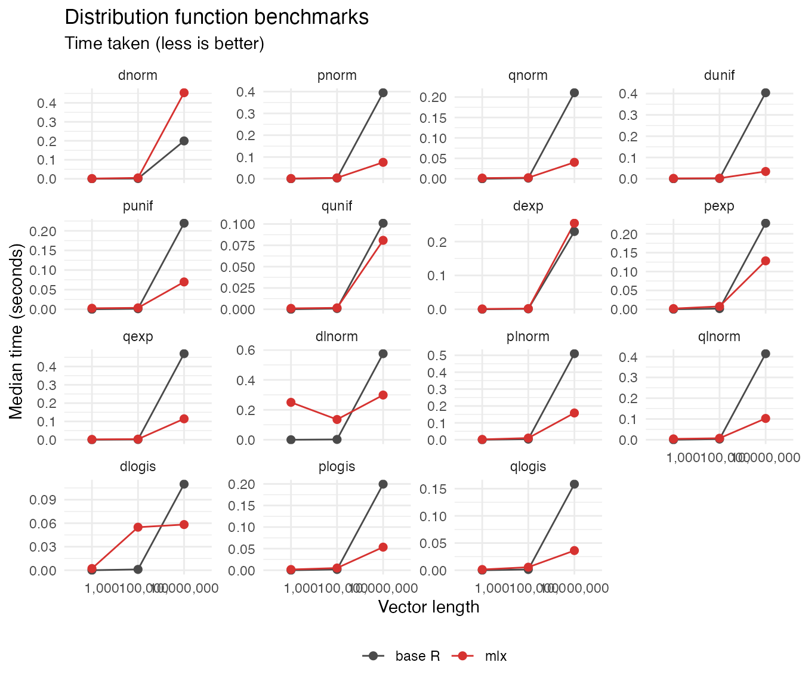

This vignette compares base R and MLX timings across core matrix routines.
library(Rmlx)
#>
#> Attaching package: 'Rmlx'
#> The following object is masked from 'package:stats':
#>
#> fft
#> The following objects are masked from 'package:base':
#>
#> asplit, backsolve, chol2inv, col, colMeans, colSums, diag, drop,
#> outer, row, rowMeans, rowSums, svd
library(bench)
library(ggplot2)
helpers_path <- system.file("benchmarks", "bench_helpers.R", package = "Rmlx")
if (!nzchar(helpers_path)) {
fallbacks <- c(
file.path("inst", "benchmarks", "bench_helpers.R"),
file.path("dev", "benchmarks", "bench_helpers.R")
)
helpers_path <- fallbacks[file.exists(fallbacks)][1]
}
if (is.na(helpers_path)) {
stop("bench_helpers.R not found. Ensure the package is installed or the inst/benchmarks directory is available.")
}
source(helpers_path)
sizes <- c(small = 500L, medium = 1000L, large = 2000L)
inputs <- build_benchmark_inputs(sizes)
operations <- benchmark_operations()
bench_results <- run_benchmarks(operations, inputs)
bench_results$size <- factor(
bench_results$size,
levels = names(sizes),
labels = sizes
)
bench_results$implementation <- factor(
bench_results$implementation,
levels = c("base", "mlx"),
labels = c("base R", "mlx")
)
bench_results$operation <- factor(
bench_results$operation,
levels = vapply(operations, `[[`, character(1), "label")
)
ggplot(
bench_results,
aes(x = size, y = median_seconds, colour = implementation, group = implementation)
) +
geom_line() +
geom_point(size = 2) +
scale_colour_manual(values = c("base R" = "#4A4A4A", "mlx" = "#D63230")) +
facet_wrap(~ operation, scales = "free_y") +
labs(
title = "Benchmarks for common matrix operations",
subtitle = "Time taken (less is better)",
x = "Matrix size",
y = "Median time (seconds)",
colour = ""
) +
theme_minimal(base_size = 11) +
theme(legend.position = "bottom")
Distribution Functions
Distribution functions operate on vectors rather than matrices, so we benchmark them at larger sizes: 1,000, 100,000, and 10,000,000 elements.
dist_sizes <- c(small = 1000L, medium = 100000L, large = 10000000L)
dist_inputs <- build_distribution_inputs(dist_sizes)
dist_operations <- distribution_operations()
dist_results <- run_benchmarks(dist_operations, dist_inputs)
dist_results$size <- factor(
dist_results$size,
levels = names(dist_sizes),
labels = format(dist_sizes, scientific = FALSE, big.mark = ",")
)
dist_results$implementation <- factor(
dist_results$implementation,
levels = c("base", "mlx"),
labels = c("base R", "mlx")
)
dist_results$operation <- factor(
dist_results$operation,
levels = vapply(dist_operations, `[[`, character(1), "label")
)
ggplot(
dist_results,
aes(x = size, y = median_seconds, colour = implementation, group = implementation)
) +
geom_line() +
geom_point(size = 2) +
scale_colour_manual(values = c("base R" = "#4A4A4A", "mlx" = "#D63230")) +
facet_wrap(~ operation, scales = "free_y") +
labs(
title = "Distribution function benchmarks",
subtitle = "Time taken (less is better)",
x = "Vector length",
y = "Median time (seconds)",
colour = ""
) +
theme_minimal(base_size = 11) +
theme(legend.position = "bottom")